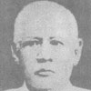
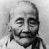
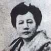
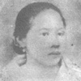
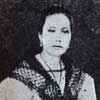
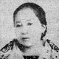
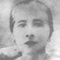
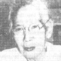
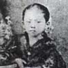

The Mercado - Rizal Family
The Rizals is considered one of the biggest families during their
time. Domingo Lam-co, the family's paternal ascendant was a
full-blooded Chinese who came to the Philippines from Amoy, China in
the closing years of the 17th century and married a Chinese half-breed
by the name of Ines de la Rosa.
Researchers revealed that
the Mercado-Rizal family had also traces of Japanese, Spanish, Malay
and Even Negrito blood aside from Chinese.
Jose Rizal came from a 13-member family consisting of his parents,
Francisco Mercado II and Teodora Alonso Realonda, and nine sisters and
one brother.
-

FRANCISCO MERCADO (1818-1898)
Father of Jose Rizal who was the youngest of 13 offsprings of Juan and Cirila Mercado. Born in Biñan, Laguna on April 18, 1818; studied in San Jose College, Manila; and died in Manila.
-

TEODORA ALONSO (1827-1913)
Mother of Jose Rizal who was the second child of Lorenzo Alonso and Brijida de Quintos. She studied at the Colegio de Santa Rosa. She was a business-minded woman, courteous, religious, hard-working and well-read. She was born in Santa Cruz, Manila on November 14, 1827 and died in 1913 in Manila.
-

SATURNINA RIZAL (1850-1913)
Eldest child of the Rizal-Alonzo marriage. Married Manuel Timoteo Hidalgo of Tanauan, Batangas.
-
PACIANO RIZAL (1851-1930)
Only brother of Jose Rizal and the second child. Studied at San Jose College in Manila; became a farmer and later a general of the Philippine Revolution.
-

NARCISA RIZAL (1852-1939)
The third child. married Antonio Lopez at Morong, Rizal; a teacher and musician.
-

OLYMPIA RIZAL (1855-1887)
The fourth child. Married Silvestre Ubaldo; died in 1887 from childbirth.
-

LUCIA RIZAL (1857-1919)
The fifth child. Married Matriano Herbosa.
-

MARIA RIZAL (1859-1945)
The sixth child. Married Daniel Faustino Cruz of Biñan, Laguna.
-
JOSE RIZAL (1861-1896)
The second son and the seventh child. He was executed by the Spaniards on December 30,1896
-
CONCEPCION RIZAL (1862-1865)
The eight child. Died at the age of three.
-
JOSEFA RIZAL (1865-1945)
The ninth child. An epileptic, died a spinster.
-

TRINIDAD RIZAL (1868-1951)
The tenth child. Died a spinster and the last of the family to die.
-

SOLEDAD RIZAL (1870-1929)
The youngest child married Pantaleon Quintero.